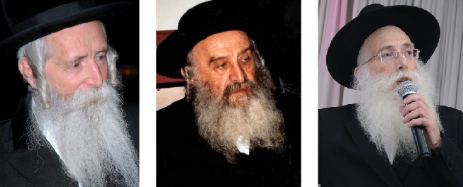

כותב היומן, הרה”ח ר’ טוביה זילברשטרום | הרב משה הלברשטאם | הרב יצחק דוד גרוסמןהרבי מרומם כל יהודי
מהי המחשבה הנכונה של יהודי לקראת יום הפורים? >> מה הטריד את הרבי לגבי כשרות היין בחג הפסח, וכיצד פתר הרבי בעיות במגדל העמק? >> מי הייתה המשפחה שהמתינה לרבי מחוץ לחדרו וביקשה את הכרעתו הגורלית? >> יומן מרתק וגדוש מחודש אדר תשל”ה שכתב הרב טוביה זילברשטרום, באותם ימים ‘תמים’ בישיבת ‘תומכי תמימים’ המרכז
מהי המחשבה הנכונה של יהודי לקראת יום הפורים? >> מה הטריד את הרבי לגבי כשרות היין בחג הפסח, וכיצד פתר הרבי בעיות במגדל העמק? >> מי הייתה המשפחה שהמתינה לרבי מחוץ לחדרו וביקשה את הכרעתו הגורלית? >> יומן מרתק וגדוש מחודש אדר תשל”ה שכתב הרב טוביה זילברשטרום, באותם ימים ‘תמים’ בישיבת ‘תומכי תמימים’ המרכזית ב-770.
מאת הרב טוביה זילברשטרום
רב קהילת חב”ד, שיכון חב”ד ירושלים

יום ב׳, ערב ראש חודש אדר חודש שמרבים בשמחה, תשל”ה
לכולכם יקרים לאורך ימים ושנים טובות
רב שלומות!
בשבת קודש שבת מברכים אדר, הייתה התוועדות. תמיד אפשר לראות ולהיווכח, שתוכן שיחות אלו להחדיר לדעת העולם לרוממם ולהעמידם בקרן אורה. א איד האט בעה”בטישקייט אויף וועלט [= יהודי הוא בעל הבית על העולם] על ידי שמתקשר עם התורה, שקשורה עם קוב”ה והיא למעלה מהזמן ומקום.
הנקודה הנלמדת במיוחד מחודש אדר, שלא נמצא כן בשום חג ומועד, שיכול להיות בעל הבית גם על העבר; מיד בתחילת החודש כשיודע שעוד מעט יבוא יום הפורים, שיהיה ‘ונהפוך הוא’, הרי כבר מעכשיו - בתחילת החודש - עומד הוא במצב של מרבים בשמחה.
בשיחה הב׳ דיבר אד”ש, שכל יהודי באשר המעמד ומצב שבו הוא נמצא, יכול להגיע לזה, אפילו כשעדיין במצב של ‘העובר על הפקודים’, כלומר על כל ענין התורה ומצוות, יתר על כן - יכול להיות שכן הוא הדבר; אך בכל זאת אומרים לו שגם יהודי זה יכול לתת מחצית השקל ועד שעל ידי זה מתקיים ‘לכפר על נפשותיכם’, ועד למצב של ‘כי תשא את ראש בני ישראל’.
בכל נקודה ובכל שיחה, נוכחים תמיד לראות את הכוח האדיר של הרבי על פני תבל. נקודות אלו כשיגיעו לכל אחד מישראל בכל קצה העולם, במצב שבו יהודי נמצא שבור מיואש, הרי רואה כאן עדיין שעתידו מזהיר; ברגע אחד שוב יכול להעמיד את עצמו בקרן אורה. ואדרבא, גם כל העניינים שבעבר. כפי ההוראה מרבין בשמחה.
אצל הרבי כל יהודי תופס מקום בכל מצב שבו הוא נמצא, הרי הוא יהודי ויש לצפות ממנו לגדולות ולנפלאות. וכמו שהרבי אמר שהדבר הזה נעשה על ידי משה רבינו. ועל משה רבינו וואס ווארפט זיך אריין אין דעם [ש’הכניס’ עצמו בזה], וסמוכים איש מפי איש עד משה וכו׳ עד לדורנו - כ”ק אדמו”ר מהוריי”צ. מובן מאליו כמה מילים אלו נותנים לנו, איך שהרבי האדם היחיד וואס ווארפט זיך אריין [ש’נכנס’ בזה] ומשקיע כל כוחו ועצמותו, אבי נאך איד זאל ווערן נענטער [העיקר שעוד יהודי יהיה קרוב יותר], להשיבו אל אביו שבשמים.
אינני יודע אם קיימת כיום מציאות בעולם שעדיין לא הכיר את המנהיגות הנמצאת פה. כמדומני שקשה להעיד ולהצביע על אישיות שעדיין לא הכירה בזה. אפילו, להבדיל, גויים כבר הכירו בזה עד לנשיא ארה”ב וכן משאר הארצות. כמו שניתן להיווכח בהתוועדות שהתקיימה בי׳ שבט, לרגל כ”ה שנות נשיאות הרבי שליט”א, איך שבאו מכל פינות אמריקה מכתבי הערכה והערצה על פועליו הכבירות והברוכות.
ונסיים הפעם בברכה חשובה המאחלים כל בני ישראל: שימשיך לנהוג את נשיאותו ברמה עד ל’וירם קרן משיחו’ ובקרוב ממש.
נ.ב. יכול להיות שכדאי היה להציע ל… לכתוב לרבי שליט”א. בכל זאת שם אפשר למצוא ולהשלים את הנצרך והדרוש מרגוע נפשי. וגם הם יודעים זאת, וכמו שכבר שלחו בשעתו פ”נ בנסיעת ההורים שי׳ אל הרבי שליט”א.
בשורות טובות בכלל ובפרט
תמיד כל הימים,
טוביה
ה’פוסק’ מ’העדה החרדית’ ב’יחידות’
יום רביעי, ח׳ אדר, תשל”ה
משפחה יקרה לאורך ימים ושנים טובות,
רב שלומות!
כאן ב”ה הכל בסדר, מתקרבים לחג הפורים הבעל”ט, והרבי שליט”א בתור מנהיג ורועה ישראל, עושה ‘שטורעם’ מאז שבת מברכים. בנוסף לזה, בהתוועדות מיוחדת שהתקיימה בראש חודש אדר, על מנת שהדברים יגיעו לכל קצוי תבל על ידי הטלפון, כלשון הקדושה בהתוועדות - על מבצע פורים, במיוחד בנוגע משלוח מנות ומתנות לאביונים. ובמצווה זו במיוחד מתבטא העניין של ‘טוב לשמים וטוב לבריות’, בפרט שהשנה קביעות יום הפורים הוא ביום השלישי שהוכפל בו כי טוב.
כנראה יחודשו שוב יציאות של ‘הטנקים’ למשך ימי הפורים. כמו כן, כהכנה מאז שהמגילה נקראת בימים שלפני זה, לזכות עוד יהודים בעניין נעלה זה.
לילי ה’יחידויות’ נמשכים, הגם שנצטמצם במקצת גם בזמן. בדרך כלל, בסביבות השעה 12–1 בלילה מסתיימת קבלת היחידות; בכל זאת ממשיכים לזרום לכאן מימה ומקדמה, מצפונה ומנגבה.
ביום ראשון זה נכנס הרב משה הלברשטאם, מורה הוראה מעדה החרדית, ושהה כשעה ורבע אצל הרבי. שוחחו על כל מיני ענייני הלכה כלליים, וביניהם על אספקת היין לחג הפסח לארץ ישראל בשנה זו, וזאת אחר שהתעוררו חששות בנוגע ליינות וכו׳. שוב ניתן לראות כאן נקודה זו - מי הוא הדואג על כשרות דחג הפסח, לא כאן אלא בארץ ישראל ועל ידי ההשגחה של ‘העדה החרדית’, וגם בזה עומד הרבי שליט”א ודואג ומשגיח.
כמו כן היה עניין מסוים שהרבי ביקש מהרב הלברשטאם כאשר ביקר כאן בפעם הקודמת לפני כ־7 שנים, אך לא מילא בשלימות את בקשת הרבי. על כך סיפר לו הרבי, שהיה פעם משולח שהלך לגבות כספים לזמן מסוים, אך האריך בנסיעתו וחזר באיחור. בחזרתו הוכיחו על איחורו, והוא ענה: הרי עניני הוא להביא כסף ולצבור, והנה צברתי הסכום ואף קצת יותר. על כך ענו לו: “חכם אתה, אילו היית חוזר, היינו יכולים לשלוח אותך שוב, והיית צובר הרבה יותר”. וכן בנמשל - אם היית מקיים את משאלתי, הייתי יכול לבקש שוב, אך…
באותו ערב נכנס גם הרב גרוסמן ממגדל העמק, ושהה בקודש כ–20 דקות. בין העניינים שסיפר לאחר שיצא, שהרבי טען שאברכים צריכים לנסוע לשבתות ליישובי הצפון, לעורר ולהלהיב על מצב היהדות העזוב. ובכללות בארץ ישראל המורל כעת נמוך ביותר, הרי הזמן הראוי לעסוק בהפצה. כן דיבר שבכלל היה טוב שיתיישבו יותר באזורי הצפון. הרבי גם שאלו על כולל שהיה בכרמיאל, וענה שנסגר מחמת חוסר מימון. והרבי ענה לו [בשם השווער, כמדומני] שאדרבא זאת ההוכחה שהעניין טוב ולכן ישנה מצוקה יותר, וביקש שיפתחו שוב וכו’. כן שאל הרב גרוסמן את הרבי על הוצאת תלמידים מבית הספר ממ”ד לישיבות, שכן בבתי הספר טוענים שהוצאת תלמיד כזה, יש בכך משום הרס הכיתה. והרבי ענה שיש תמיד ללכת בדרכי נועם, ולהסביר לבית הספר שחבל על כשרונות התלמיד; ולהסביר שעל פי יכולת הקיבול שלו, הם אינם מספקים לו את הדרוש, ושיבינו בעצם טוב העניין. ואם יטענו בכל זאת שהם נותנים מספיק וכו’ - אין ללכת עמם בדרכי ריב.
כל טוב ולהשתמע
טוביה
רבי! האם אתה מסכים לניתוח?
יום שני פרשת ויקהל פקודי, תשל”ה
הורים יקרים לאורך ימים ושנים טובות,
שלום וברכה!
ברכת השנה היא “כה לח”י” [לכבוד כ”ה שנים לנשיאותו של הרבי - המלבה”ד], על אחת כמה וכמה כאשר מצטרפים שניהם יחד - כ”ה שנים וח”י אדר [יום נישואי הוריו של כותב השורות, הרה”ח הרב אהרן מרדכי זילברשטרום ע”ה, ותבלחט”א מרת מרים תחי’ - המלבה”ד] הרי הברכה כפולה ומכופלת.
בליל שבת קודש שעבר השתתפנו כולנו כאן כולנו בשתיית ‘לחיים’ בבית משפ׳ שוחט, ואיחלנו שכשם שביום זה יש לברך אשרינו מה טוב חלקינו ואשרי יולדתנו שזכינו להסתופף בצל כ”ק אד”ש, כך יזכו גם ההורים שוב לבוא הנה לכ”ק אד”ש.
אחרי ההתוועדות שהתקיימה בח”י אדר, ניגשתי מיד ולקחתי (חטפתי) מעט מהמזונות של כ”ק אד”ש על מנת להעביר לכם.
ההתוועדות ברובה נסבה על המשך השיחות מהתוועדות שהתקיימה בפורים, כאשר עיקר החיות היא בעניין ‘טוב לשמים ולבריות’. וכמו שהזכיר אז אמאל פארבייגט מען דעם [מוותרים על] ‘טוב לשמים’, והעיקר שיהיה ‘טוב לבריות’.
הנה מעשה שהיה השבוע: במוצאי שבת קודש זו נעמדו הורים וכמה ילדים והגניבו את האבא מבית הרפואה, וכשהרבי יצא, דיברו עם הרבי שהוא סובל בכליות על המחלה הידועה, והרופאים אומרים לנתחו, אך הם חוששים שהרופאים עושים ניסיונות על גופו, וממילא אין כוונתם בניתוח לשמה.
הרבי התעניין מי הרופאים, ואמר אם רופא פלוני אמר לנתחו - שינתחו. הרבי המשיך ושאל למתי נקבע הניתוח? וענו או מחר ביום ראשון או ביום שלישי, ואמר הרבי כיון שיום ג׳ הוכפל בו כי טוב - טוב לשמים ולבריות, שיעשו ביום זה ויהיה בהצלחה.
הבן התרגש ושאל את הרבי בלשון נוכח: “אינני שואל דעת הרופא, אלא האם אתה מסכים שינתחו?” ושוב ענה הרבי שדעתו שינתחו ביום ג׳ שהוכפל וכו’. והוסיף שמעתה ואילך ישמרו בבית על כשרות. וגם אתה - פנה אל האב - כשתחלים ותבוא לבשר על הידיעה, תמשיך לשמור ולהיזהר בכשרות.
אתמול יום א׳ הגענו לתפילת ערבית און איך האב עם אריינגעשלעפט [ואני ‘משכתי’ אותו]. וכשכ”ק אד”ש יצא ממעריב לחדרו, זכינו לקבל מבט קורן וחודר מכ”ק אד”ש.
ובינתיים שוב בברכת כ”ה לח”י ולאריכות ימים ושנים טובות, ולנחת רוח מכל יוצאי חלציכם שי׳
כל טוב ולהשתמע בבשורות טובות
טוביה
(מתוך ‘תשורה’ שיצא לאור על ידי המשפחה)